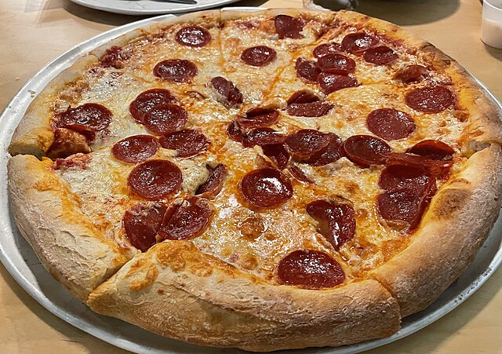
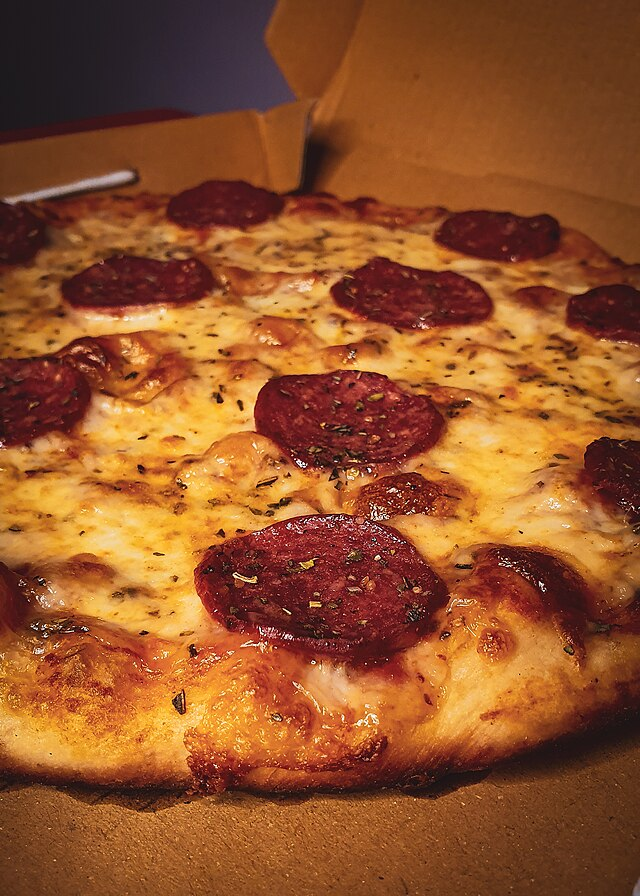

1910s–1920s: Pepperoni, a cured blend of beef and pork seasoned with paprika and chili, was developed by Italian immigrants in the U.S. to replicate spicy sausages like salsiccia or soppressata. The term "pepperoni" was first mentioned in 1919. 1950s: While pizza had been in the U.S. earlier, pepperoni became a regular pizza topping in the 1950s, aided by the rise of commercial pizza ovens. 1960s–present: The rapid expansion of pizza chains like Domino's and Pizza Hut during the 1960s solidified pepperoni as the "default" US pizza topping because it was cheap, easy to transport, and mass-produced.

